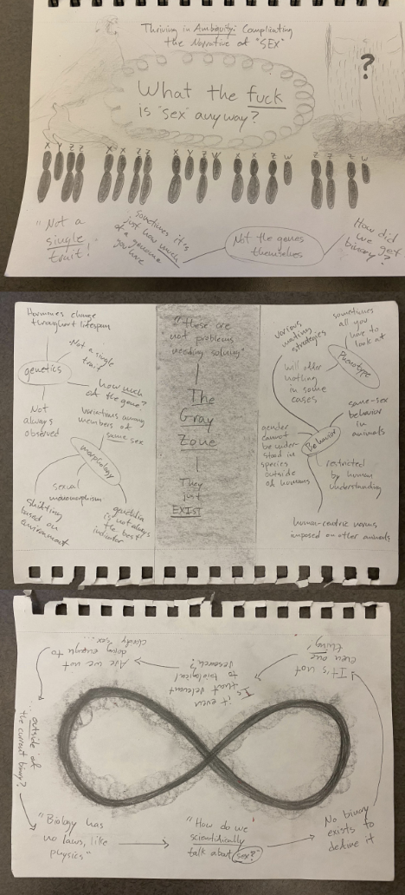

Week 10
Un-essay showcase
For their final projects, students created an unessay1 on a topic of their choosing related to queer ecology.
An unessay is a project in any format besides a traditional final paper. Students created sculptures, drink menus, board games, collages, paintings, poems, zines, quilts, and more!
Regardless of the format, the unessays were evaluated on the quality of their interpretation, research & evidence, communication, and creativity. All students presented their projects on the final day of class.
Ian
Red Legged Frog Screen Print
My Unessay, I chose to do screen printings depicting Red-Legged Frogs in a patterned format. Each print has a wash water print to represent the environment they live within. All of the design of the frogs was created in Photoshop and printed each layer to create a production-style process. For my prints, I had to print each layer twice after rotating the page. Because I was working on this project for this class and for my printing class, I made ten prints. Meaning that I printed fourteen layers per print, so I printed one-hundred and forty layers.
I chose to highlight the local endangered animal because I am in a Herpetology course right now and we got to go out to find them. One of the main reasons I chose to depict these animals was to bring awareness to them in a more artistic approach. A lot of science and Biology uses a lot of extensive jargon which isn’t appealing to audiences that don’t study these subjects. By creating pieces for a broader audience it can possibly bring awareness and make a change within the world. After hearing from Dr. Jessica Kendall-Bar I was re-inspired by my old passion for mixing art and Biology in order to provide easier access or curiosity to those that don’t necessarily study these subjects.
Rosie
Pride Flag Quilt

Flags are the public embracement of home, family, and identity and the pride flag, with its evolution throughout the decades, is all of these things to queer communities around the globe. Flying a pride flag is a physical act of resistance to heteronormative oppression and a celebration of humanity, love, expression, and community. This flag represents queer ecologies as a form of resistance and representation in a historically toxic field as well as my personal journey with queerness as a discovery of collaborative community; something of my identity I bring to research endeavors. This pride flag is a product of collaboration, made with fabric scraps that I have collected from friends, family, and La Fabrica (textiles co-op) over the years waiting for an available time for creative expression in the hustle of academia. In this way this piece celebrates a line of our collective Queer Science Manifesto, “Queer Science celebrates collaboration and community over individualism and ego” (Lobel et al., n.d.). This collaborative aspect of queer ecologies was a pattern throughout the several speakers’ talks; for example, Dr. Esposito’s work with 500 Queer Scientists or Dr. Czapanskiy’s research into shared physio-logging data processing (Czapanskiy and Beltran, 2022). I hope with great scientists like these speakers paving the way, we will see more pride flags in office windows, field stations, research vessels, lab coats, classrooms, all wheel drive trucks, and all other spaces of ecology; encouraging a future where we all have the freedom and opportunity to make good science and love doing it.
Annice
No Room for You
There is a common belief that we must remove ourselves from our research to prevent bias. In this way we have moved to a type of science that is either black or white, leaving no room for gray, a clinical view that often causes queerness to be overlooked for its fluidity and uncertainty. This piece shows that clinical view with no room for interpretation, showing animals I associate with queerness and homosexual tendencies as mere specimens with labels and no complexity to them.
Dominic
Thriving in Ambiguity: Complicating the Narrative of Sex

This piece is a collection of thoughts and quotes from my mindmap of the lecture given by Dr. Jess McLaughlin with an emphasis on their descriptions and analysis of current understandings and misconceptions of what biologically defines “sex” and the ramifications of this. In this piece I am looking to present key ideas in 3 panels; an infinity symbol representing the seemingly unending questions that scrutinize old understandings of sex, the Gray (Queer) Zones that reflect the true non-binary nature of sex, and “big question” that analyzes our associations with the term “sex.” This is a reflection of Dr. McLaughlin’s call to complicate the narrative surrounding the discussion of sex in mainstream ecology and evolutionary biology.
Gabrielle
A Queer Coral Reef
Coral reefs are one of the most diverse ecosystems in the world, rivaled only by the tropical rainforests.They are healthy, full of life, and productive. Every individual is different, but everything exists in a perfect balance. Humans are diverse too, but our diversity is not always acknowledged or treated equally. Accepting queer identities in the field of science, as well as other fields, is important in creating a healthy and productive ecosystem.
Kaia
gay spider (2023) (colorized)
In this work, I incorporated my personal experience as a queer fiber artist to create this representation of how underrepresentation affects both queer the queer community and spiders. Recently, there has been controversy over the NSF’s decision to omit sexual orientation questions from their census data and that lack of record was reflected similarly in spiders, according to the paper by Dr. Lauren Esposito. Additionally, I related this issue to the fiber arts community, as there are a great deal of stereotypes about who partakes, and it is important to represent the full diversity of artists even when they do not fit that mold.
Bella
Whispers of Eros: Mysteries of the Bermuda Triangle
The question of how and where American and European eels reproduce has only recently been discovered, and until now has boggled the minds of researchers for centuries. When they reach their last stage of life (usually between 7-24 years old) they travel hundreds of miles to the Bermuda Triangle to mate (Eros - god of love and sex) and only then do they develop sexual organs. I try to capture the moment of intersection where the research vessel is so close to uncovering this mystery, yet it is driving in the wrong trajectory.
More on the topic/artist interpretation:
The American and European eel represent a biological mystery that was not cleared up until very recently. For centuries, researchers dissected thousands of individuals in a race to be the first to find and describe their sexual organs, with most attempts being unsuccessful. This enigma of eel sexuality was only recently explained when researchers discovered where they breed. These eels travel from freshwater streams all around the Atlantic coasts of America and Europe, and end up at the Sargasso sea to mate when they are sexually mature - which tends to be between 7-25 years. Only in this last stage of life do they develop sexual organs. The Sargasso sea is located within the Bermuda Triangle. Because of the documentaries I’ve watched as a kid about the bermuda triangle, I grew up considering this area as a mysterious hotspot for sea monsters, which is why I chose to portray the eels so big. Eros, the goddess of love, represents the sexual intentions of the migration.
The need to discover is in the job description of all researchers, yet the ability to do so can be correlated with how we choose to understand the biological world. My painting attempts to portray how our way of thinking about biology is misaligned with the entire spectrum of sexuality. The eels, barely visible under the water, represent this mysterious migration traveling in one direction. The research vessel attempting to track them is traveling in the wrong direction. I try to capture the moment of intersection, where we are so close to understanding, yet the truth lies just out of reach beneath the surface. It is up to us, as a scientific society, whether or not we want to change course in our trajectory of understanding biology and, thus, ourselves.
Emma
Lesbian Pride Flag
For my unessay project I decided to make a lesbian pride flag out of photos of different plants and animals that I find fascinated. I took inspiration from Dr. Luong’s zoom background where he had made a pride flag out of flowers. I decided to use the lesbian flag for this project because it represents my identity most closely. I felt like this project not only reflected my life as a lesbian who is fascinated by various forms of life on earth but also represents the various animals that show queerness in their natural history.
Nitya
Radical Moves: Queer Ecologies
This infographic highlights each scientist’s contributions to science and how that connects to the themes in our Queer Science Manifesto. After going through the assigned articles and notes accumulated for each speaker, I connected each scientist to a specific bullet point in the manifesto. Although many scientists fit these boxes, I wanted to highlight the one that describes them the best from what they shared in our class.
Alegria
Queer Mixologies
My final project is my interpretation of a few of the key themes I gravitated toward throughout this course. Rather than analyzing them in the typical paragraph format, I opted to display them as menu items that are composed of several key components. A number of the “ingredients” may seem pessimistic but that has seemed to be an underlying theme of a lot of our lectures. My hope is that the menu can give people with little to no knowledge of Queerness or Ecology some idea about what exactly Queer Ecology is.
Kati
Biological Exuberance
The title of my unessay comes from the book Biological Exuberance by Bruce Bagemihl, which is a thorough overview of research on queerness in nature up until 1999 (when it was published). One of its theses is that not only is queerness very common in nature, but it brings evolutionary benefits, a refutation of the viewpoint that much of science had, and to some extent still has, that queer behavior in animals is unnatural or an evolutionary fluke. I painted birds in every color of the pride flag - inspired by Justin Luong’s zoom background of the flower flag - to showcase that just like how the bright colors of the avian world are often seen as a symbol of biological exuberance, queerness can too.
Raven
The “Cantankerous” Creature Feature
This crocheted art piece was inspired by Dr. Christine Wilkinson’s talk on human-wildlife interactions and hyenas. This piece features uncharismatic predators, scavengers, and common backyard animals who are often vilified or deemed a pest around the world that have been woven into a colorful tapestry. Despite their odd appearances or so called wild behaviors, these animals play a role so important that we as humans would struggle without their occupancy in the natural world.
Ren
New Trails
This poster serves to embody the ability of queer scientists to move beyond restrictions set into the foundations of science including restoration ecology. Hiking boots clad with rainbow wings display this feat proudly while ideas from “Inclusive Restoration” (Toone et al.) surround. Tenets of the Bio 199F manifesto accompany; they are in community.
Daniela
Queer Ecology Word Cloud
My project includes the google definitions of both Queer and Ecology. I have these first to show how the world views Queerness and Ecology, then the word cloud is filled with words I associate with queerness and ecology. I then created my own acronym for what Queer means, and finished with the most impactful lines to me from the Queer manifesto.
Avery
Tell Me Everything
I wrote this as a letter to my past self. Something that spoke to me from the presentations was how much a lack of representation can affect someone and how much lack of representation affected my younger self. Specifically in the STEM field, most people are white heterosexual men. In highschool, I was deterred from studying STEM due to several negative experiences; involving men in positions of power and from lacking figures to look up to. Separately- I was also deterred from my sexuality because I did not have many figures of queer women growing up.
*For clarification, in high school, I did an independent study of the retention rates of women for a STEM institute I was a part of. The retention rates were so poor that the institution decided not to publish my work.
Sage
Cuidado
The hyena stands in as an allegory for queerness in society, vilified because it is misunderstood. The wisps of smoke and Spanish caution tape call back to Lauren Esposito’s talk and their thoughts on growing up with the struggles of the intersectionality of queerness and Latinidad.
Cara
Guess Who: Animal Sex and Mating Edition
This board game was largely inspired by the talk given by Dr. Jess McLaughlin titled “Blurry species boundaries and binary breaking: exploring grey areas in biology.” By using a variety of organisms across taxa this game explores different mating and sex determination strategies to exemplify how the classical view of sex as binary is a large oversimplification of a complex ecological process.
India
Breaking Binaries in Nature
For my un-essay, I decided to do a collage representing the idea of how nature inherently breaks binaries. During this class, learning in depth about how nature does not follow the human constructed, very strictly defined categories that we have created has been extremely valuable to me. So many arguments against trans and queer identities are rooted in tracing things back to “how biology works”. This class has helped me find confirmation that yes, these identities and ideals ARE found in nature, and humanity will never be separated from that.
Vishnu
The Queer Experience in STEM Under a Microscope
My project was an attempt to bring together some facts that I remember hearing in the presentations throughout the quarter that really surprised me and present them in a way to the general public.
Araceli
Wildflower Watercolor
My unessay is a watercolor illustration of a bouquet of wildflowers and some dried flowers. The background is rolling hills covered in california poppies. This illustration shows how having a diversity of native wildflowers is important and beautiful and is based on the paper and talk by Justin Luong about wildflowers. The illustration also shows how having a diversity of scientists is important.
Max
birdsong, liberation
This final un-essay was inspired by Marwan Makhoul’s poem that is featured in the accompanying video. To me, their poem about not being able to hear the birds due to the sounds of the warplanes exemplifies what queer ecologies is about. Queer ecologies underlines the interconnectedness of all life on Earth, and thus is acutely aware of systemic violence that disrupts that interconnectedness and our ability to thrive collectively. I wanted to highlight how various systemic violences, such as those I featured on the papers viewers are instructed to use as ear coverings, inhibit the liberation Makhoul references in his vision of a world where they can hear the birds and therefore no longer must write poetry that is political. Queer ecologies also uplifts the existence, intricacies, and importance of queer and marginalized non-human and human life which is why I decided to only feature birds that exist outside of dominant conceptions of sex, gender, and relationships. In having the viewers remove their ear coverings in order to hear the birdsong, I wanted to encapsulate Hoda Katebi’s quote, which is also featured in the video, about how we have the power to abolish the systems that are standing in the way of liberation because we make up these very systems. This includes the gender binary and biological determinism, which is why I included the quote from the peer-reviewed article about the importance of thinking beyond the current framework around sex and biology. The act of throwing the papers out I envisioned to be a metaphor for the work of queer ecologies, which is actively building a new world in which all LGBTQIA+ people, marginalized people, and non-people (like the birds!) can thrive.
Salma
Ellie Phantastic

Ellie Phantastic flaunts her graceful purple flippers as she descends into the deep ocean for her power nap. Ellie represents a side of queer ecology that goes beyond how we thought sleep works.
Mia
A Representative Tarot
These tarot cards focus on queerness in science. Some of the cards have key phrases on them that queer scientists overcome or experience in the field of science; whether it’s in doing field research, in the lab, in meetings or classrooms. These cards reveal that science goes beyond binary terms and if scientists did have a binary view, it would be confusing that 2 male dolphins have the strongest relationships out of all social groups in their species or how other animals partake in homosexual behavior. These tarot cards also point out the change that needs to happen in order to keep queer scientists safe and successful, such as when traveling for field research.
Autumn
Pride in the Ocean
Our natural world is a beautiful and diverse place, and within marine algae, form and function is just that. For my unessay I decided to press algae that represents this morphological diversity in the form of a pride flag. Our human perspective and terms involving sexual behavior and structure demarcates certain anatomy, physiology, and behaviors of plants and animals to be binary. In truth, nature is queer!
All of these Algal pressings represent a large variety of species from different Phylums. Most of the red and brown colored algae are from the phylum Rhodophyta and Ochrophyta, while the green belong to Chlorophyta.
*With found drift-wood frame
*All Algae collected in drift
Savanna
Changing my Scientific Narrative
A visual representation of my individualism and passions as I form my scientific identity. Tokens that were chosen, encompass whole parts of myself that I sometimes have the privilege to choose to omit. As you analyze this exhibit think about what initially catches your eye, what in this visual could be easily omitted in someone’s everyday life, what identities are not deletable, and how would one benefit from making certain omissions.
Anonymous
Queer Ecology Haikus
Chameleon: I felt that the chameleon was representative of those that must hide their queerness, whether they are still in the closet, they must take down their flags when someone visits, or conform to norms in their hometowns.
Hyena: This was inspired by Dr. Christine Wilkinson’s presentation. The beautiful hyena is often looked down upon as villains for many reasons, such as their laughter or ambiguous genitalia. The haiku is centered on the thoughts of a hyena on humans instead.
Clownfish: This haiku was inspired by Dr. Jessica Kendall-Bar’s book. I enjoyed their reading and found a deep importance in teaching children to accept themselves and others, as well as not think in binary terms for gender roles.
Penguin: I remembered a story of two captive male penguins in a zoo accidentally mating and then being bonded for life and just wanted to repeat that story. For later context, the zoo was able to give them an extra egg that was laid, allowing them to raise a chick.
Caterpillar: This is a condensing of a transgender experience that is often related to the transition of a caterpillar to a butterfly. Though these transitions are much more varied in people, I find it to be a simple way to understand the ideas of being born in a way that is not congruent with your mind and heart followed by a physical transformation into the person you are inside.
Slug: I, of course, had to include the humble banana slug in my unessay. Possessing both male and female sex cells and genitalia, it seemed a pertinent example of intersex people that may possess any combination of sexual characteristics.
Sparrow: This haiku was inspired by Dr. Jess McLaughlin’s presentation on the ambiguity of animal speciation and sex. I felt it important to include as the concept of four defined sexes has many queer implications on its own.
Human: The human haiku was simply about the idea that same sex relationships and sexual practices are only discriminated against by humans, that homophobia, transphobia, and the like are all man made creations that can be taught against and are an affront to people trying to live their lives. I added swans because I knew they had homosexual behaviors and it worked with the syllables.
Anonymous
Biological Undesirables
Humans are driving the extinction of countless species through alteration of global climate patterns, degradation of habitats, poaching, hunting, and many other activities. It’s clear that we play a large role in the fate of all organisms on earth and collective perception of wildlife– as pest, predator, or commodity– influences human-wildlife interactions (Wilkinson et al., 2021). The desire to assert dominance over the tree of life can be transcended with respect for every being and the knowing that we all share the same home.
The red wolf, hooded pitcher plant, eastern gorilla, and amur leopard are all listed as endangered species and have experienced severe population decline due to anthropogenic impacts (WWF and Our Endangered World, 2022). Spiders are an organism that I and many others are afraid of, but fear can be replaced with respect. By including the black widow I pay homage to the process of unlearning.
Anonymous
The Pipeline
Anonymous
I’ll get to the bottom of this. One iguana-way or another
Identity is something I have always struggled with and finally found my identity once I came to UCSC. It wasn’t until the summer going to my junior year where I felt comfortable with my identity and until recently found my calling in academia which is to study iguanas. This project reflects both my queer identity as well as my calling in science. Especially since McLaughlin (2023) reminded me that not everything follows the labels that are set out in society and that not everything needs to be labeled or can be categorized by the binary.
Anonymous
Potential Mirrors of the Self

A digital collage meant to represent a physical one. The photo is of my sister but is meant to represent myself; though we are both transgender so the meaning is similar. We are looking at a coyote, taken from an article calling them garden pests, pasted into the river; while a white-tailed sparrow sits on our shoulder.
Footnotes
Unessay inspiration and instructions were minimally adapted from Professor Calvin Blevins at Northeastern University: https://cblevins.github.io/f19-west/unessay/↩︎